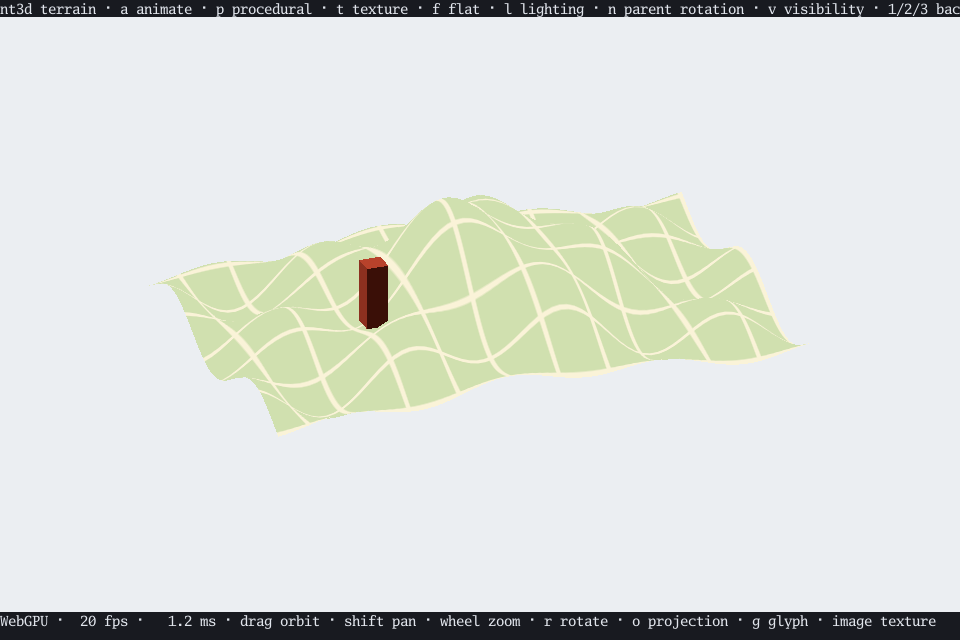
01 / SCENE & CAMERATerrain explorer ↗
An annotated heightfield with world-anchored labels, picking, and parent transforms. Flatten the hills to update the peak or compare labels across all three renderers.
Interactive terminal scenes with GPU, software, and wireframe rendering.

01 / SCENE & CAMERAAn annotated heightfield with world-anchored labels, picking, and parent transforms. Flatten the hills to update the peak or compare labels across all three renderers.
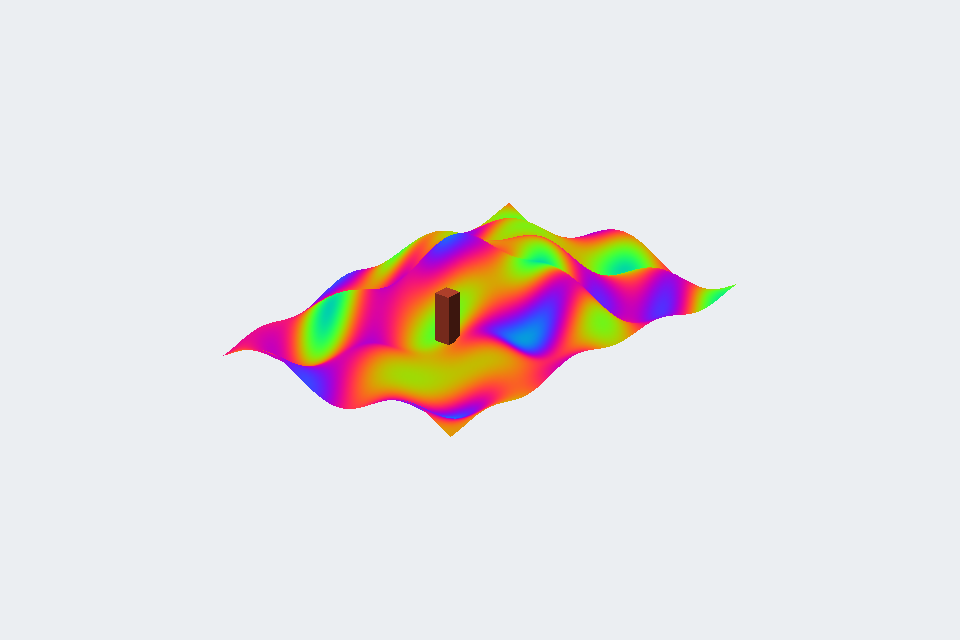
02 / SHADER TEXTURESA GPU shader paints the surface before the scene renders. Watch the plasma animate, pause its phase, and compare the software fallback.
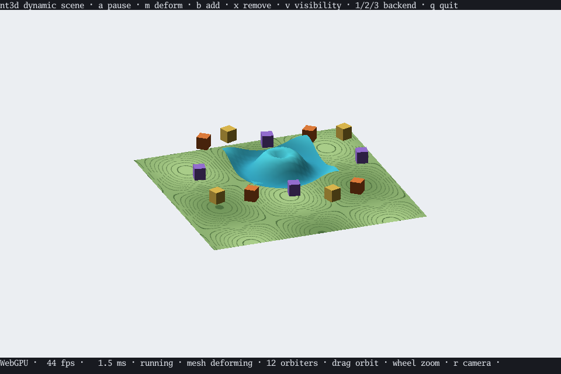
03 / DYNAMIC GEOMETRYMoving objects surround a deforming wave. Hold the mesh, add orbiters, or remove them while the scene keeps moving.
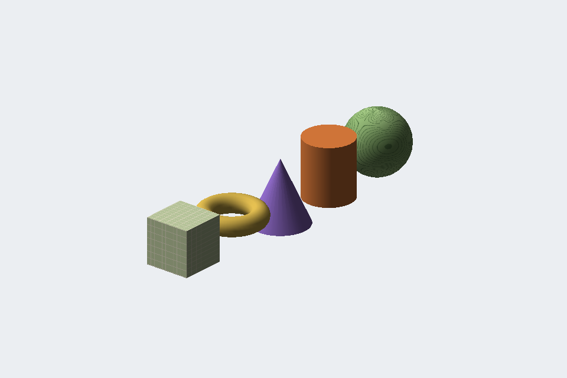
04 / SHAPE BUILDERSSpheres, cylinders, cones, tori, and cuboids, lit and UV-mapped. Switch their normals between as built, flat, and smooth.
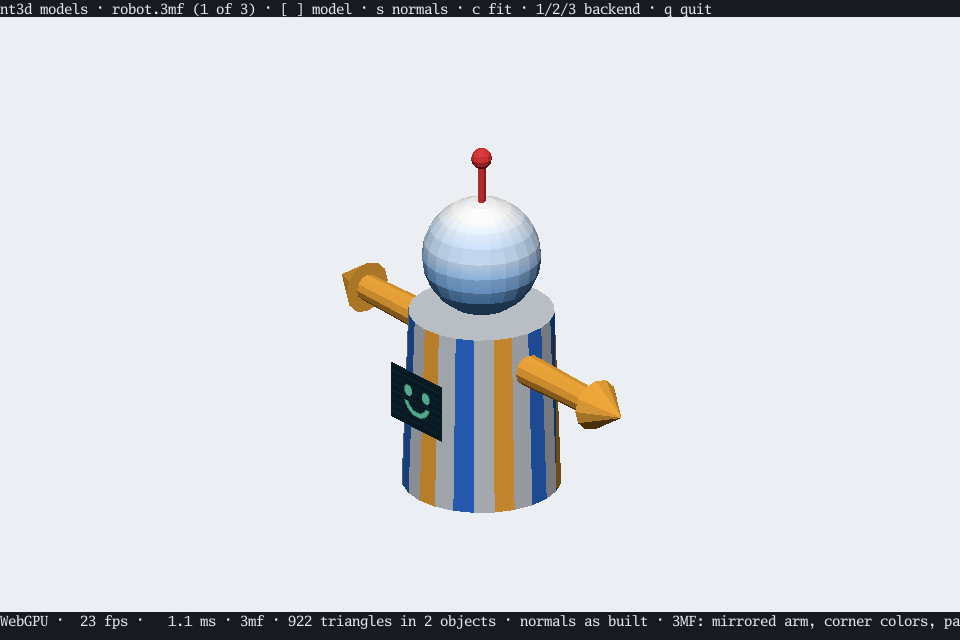
05 / MESH FILESSTL, OBJ, and 3MF read by nt3dmesh: components and mirroring, painted faces, corner colors, textures, and concave polygons.
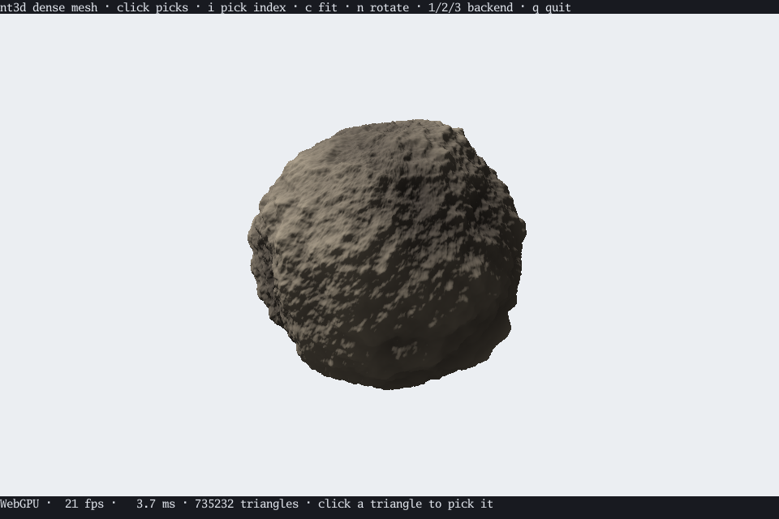
06 / DENSE MESHES735,000 triangles: drawn whole in software, outlined in wireframe, and picked through an index built in the background.
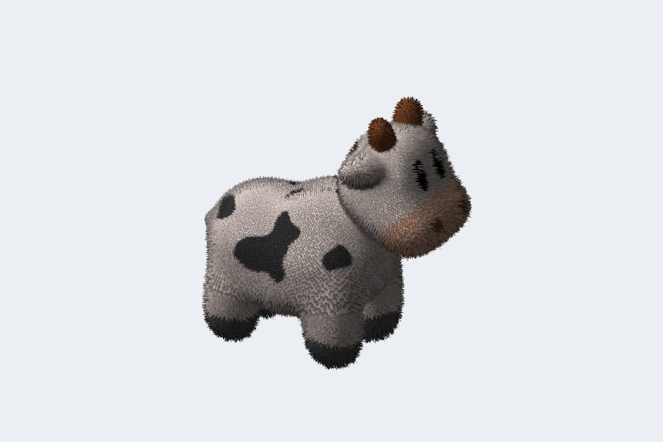
07 / CUTOUT TEXTURESSpot the cow in shell fur colored by its own texture, swaying in the wind by moving nodes alone. Cycle the shell count to see the layers build strands.
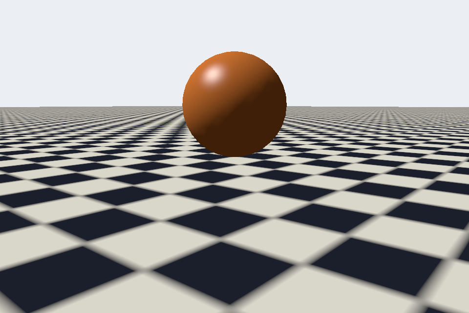
08 / MIPMAPSA tiled floor runs to the horizon. Turn mipmaps off to see far texels shimmer into moiré; on, the floor settles into an even tone, and anisotropic filtering keeps its detail toward the horizon, on the GPU and in software alike.
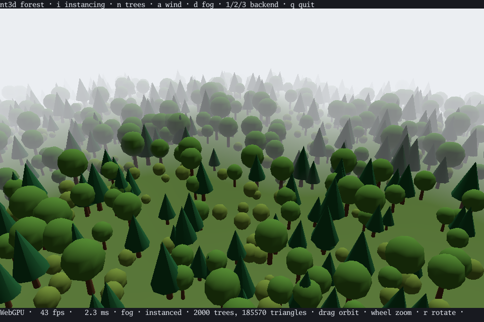
09 / INSTANCINGThousands of trees from three shared meshes, each uploaded once and drawn in one instanced call, swaying in the wind. Switch to separate copies to compare.
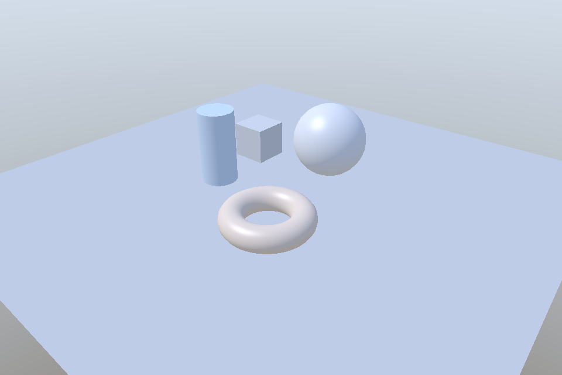
10 / LIGHTINGShapes on a floor under presets of hemisphere ambient, a turning sun, and colored point lights orbiting, up to eight at once, lit per pixel on the GPU and in software alike.
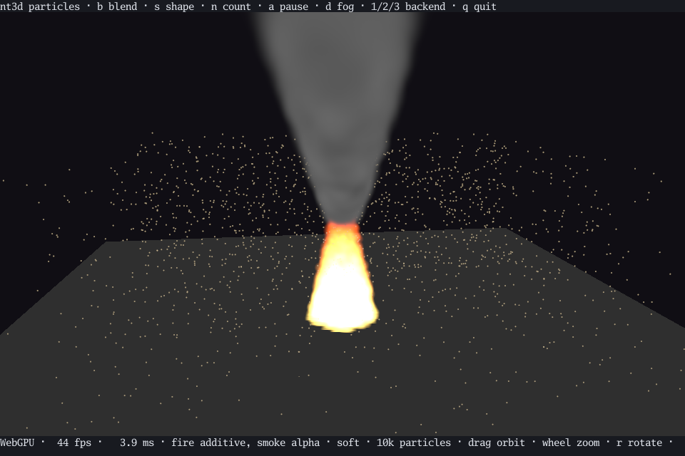
11 / PARTICLESA fire, its smoke, and drifting dust of up to 100,000 points moved every frame: soft and sized in world units, glowing additively or blended by alpha in depth order, on the GPU and in software alike.
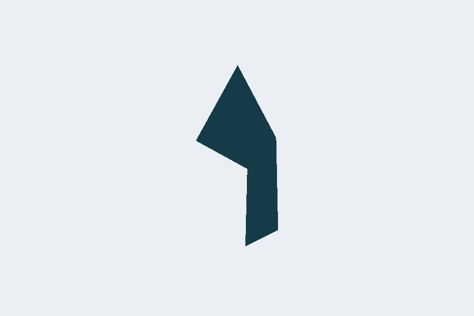
12 / ANIMATIONA ribbon with two joints, morph targets, and transform tracks, driven by the generic animation API.
Play the animation →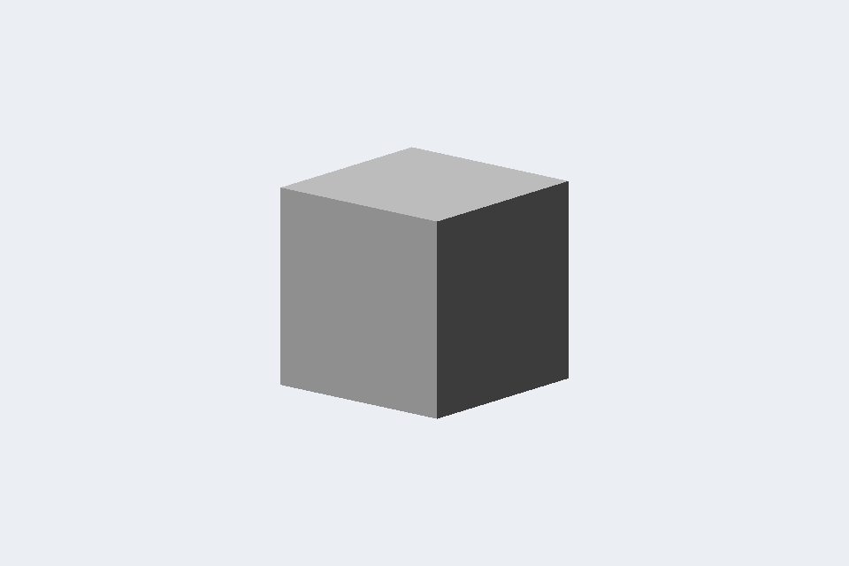
13 / GLTF SAMPLESA morphing cube, a skinned strip, and a rotating triangle: three tiny embedded CC0 samples playing through the generic animation API.
Press 1 for GPU, 2 for software, or 3 for wireframe. GPU rendering falls back to software when unavailable.
From the repository, run task terrain, task procedural, task dynamic, task shapes, task models, task large, task fur, task mipmaps, task forest, task lights, task particles, task animation, or task animate in Kitty, or task meshes -- model.stl for your own files. Use --help for options.